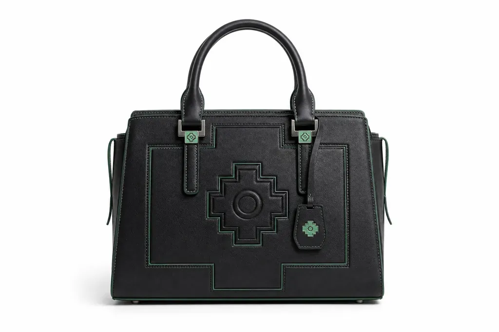
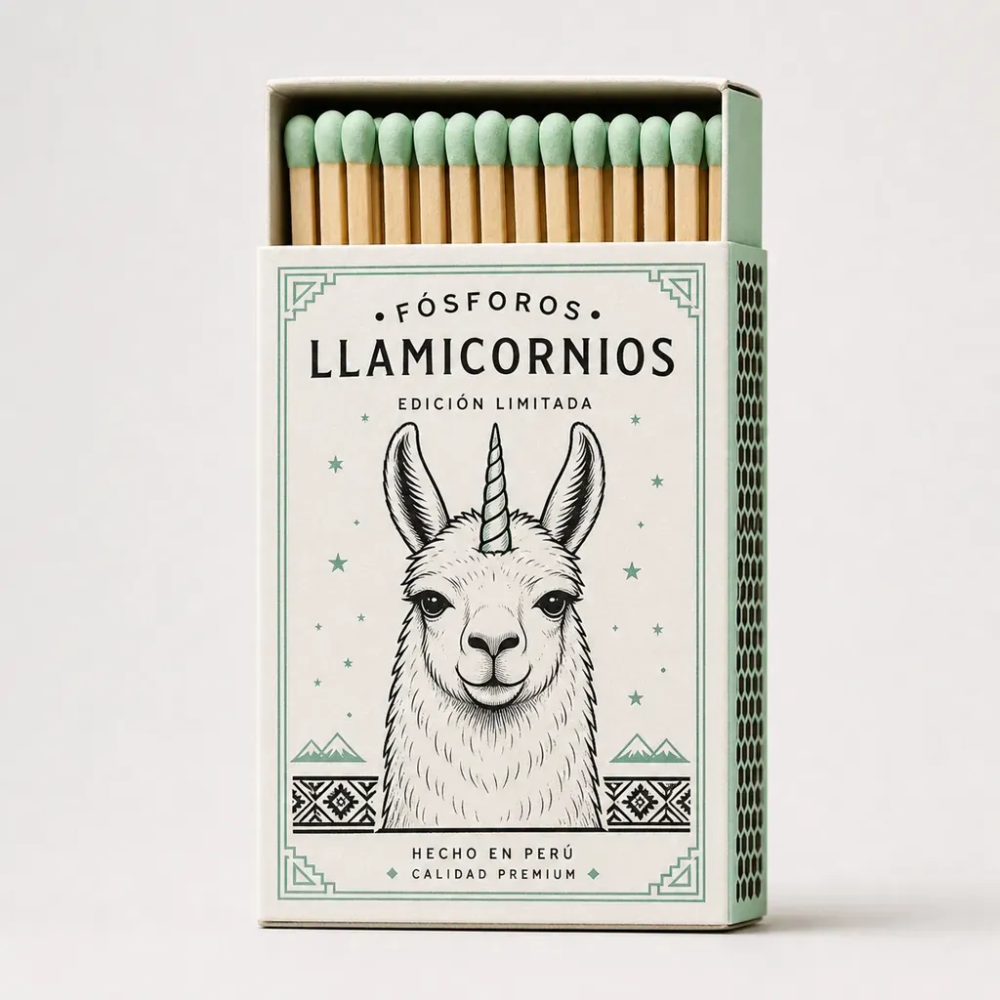
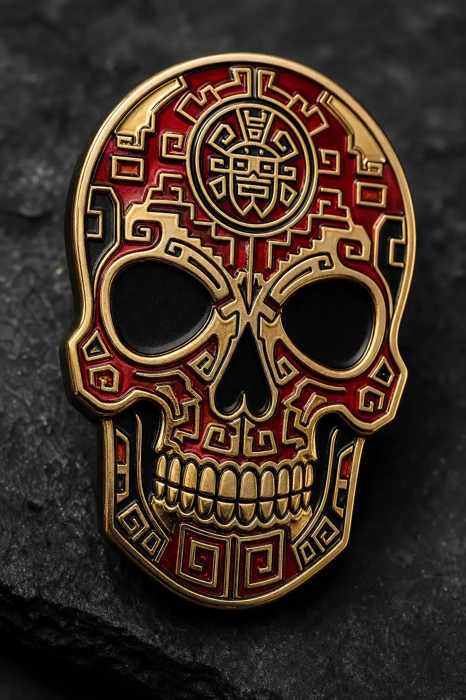
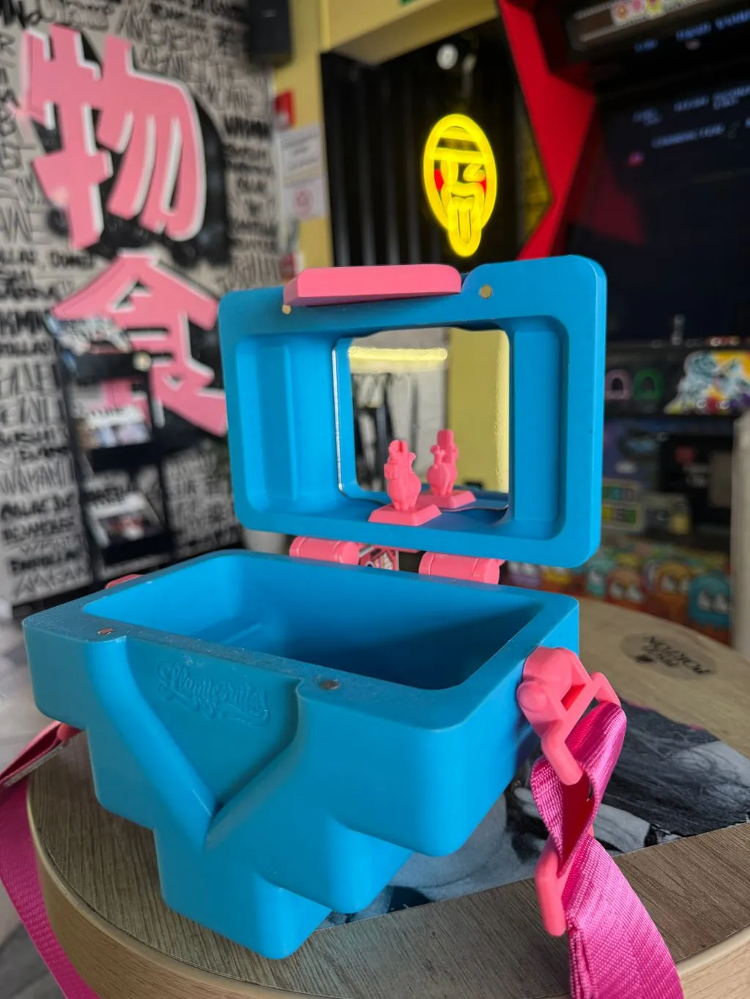
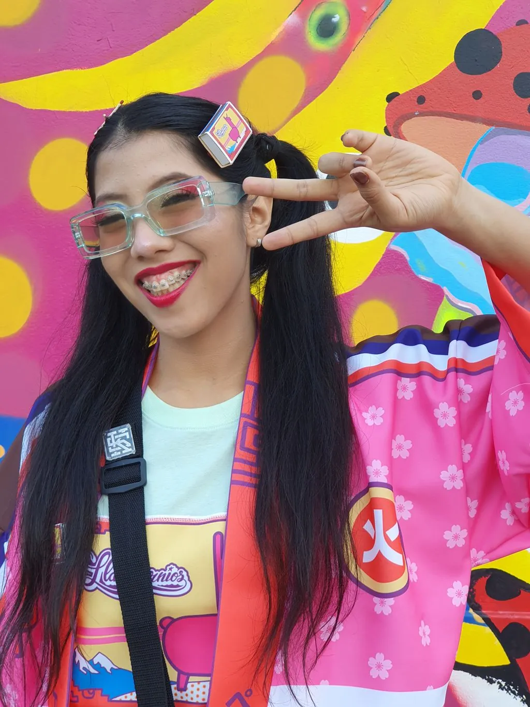
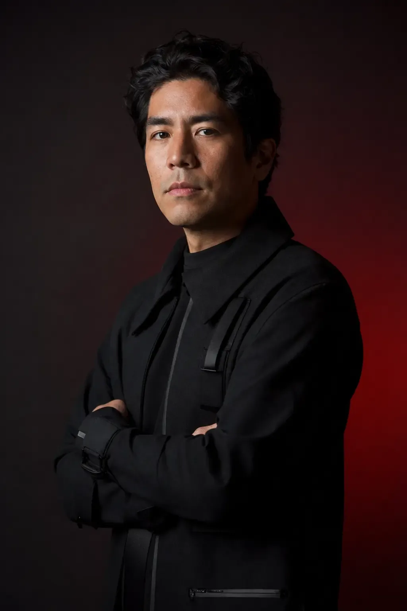

Un personaje, no un logo
Primero se define su gramática: ojos, hocico, cuerno, patas. Sin eso no hay universo, solo una marca con dibujos alrededor.
Peruano con raíces chinas y japonesas. Diseño personajes e identidades que mezclan iconografía andina con estética pop japonesa, y las llevo del dibujo al objeto: producto, juguete y espacio digital.
Lima, PerúDesde 2009Docente universitario


La llama andina se encuentra con el unicornio pop. Un universo gráfico que pasa de la cartera al fósforo y al juguete sin perder el gesto.

Chullo + Llamicornio. Una pieza textil que salió del Perú y llegó a la presentación de Minecraft en México.

Edición limitada: la marca saliendo del empaque para volverse objeto cotidiano.

Editorial de pins: diseño, producción y edición de piezas coleccionables con iconografía precolombina.

La cruz andina como estructura de bolso. Forma, color y volumen llevados a un accesorio.
Modelado, prototipado e impresión: el personaje sale de la pantalla y se puede sostener. Del render a la producción corta, con el mismo criterio de forma que en el dibujo.
Primero se define su gramática: ojos, hocico, cuerno, patas. Sin eso no hay universo, solo una marca con dibujos alrededor.
Si el personaje no se reconoce a 1 cm, no funciona. El sistema se prueba en escala pequeña antes de saltar a producto.
Estampado, cartera, fósforo, juguete. Cada soporte exige una decisión distinta; el personaje es el mismo, la pieza no.

En marzo de 2025, durante la presentación de Minecraft en Ciudad de México, Jason Momoa posó con el Chullamicornio. La pieza viajó gracias a Phillip Chu Joy y terminó en la prensa internacional.
Creación de personajes con identidad cultural, universo visual y aplicaciones de producto.
Campañas, lookbooks y sistemas visuales para marcas que quieren salir del molde.
Diseño de objetos, modelado e impresión 3D, del prototipo a la producción corta.
IA aplicada, diseño digital y metodologías creativas para universidades y equipos.

Diseñador gráfico y de personajes. Mi trabajo parte de mi identidad: peruano con raíces chinas y japonesas. Desde 2009 convierto iconografía andina en personajes, objetos y marcas.
Doy clases en la Universidad del Pacífico, Chío Lecca y SISE. Soy coautor de la tipografía Hijos del Sol, la que estás leyendo en los títulos de este sitio.
Más de 40 exposiciones en Perú, Chile, México, España, Bélgica, Japón y Argentina.
Lima, Perú (GMT-5) · Español e inglés · Respondo en 48 horas. Agenda abierta para encargos y talleres.